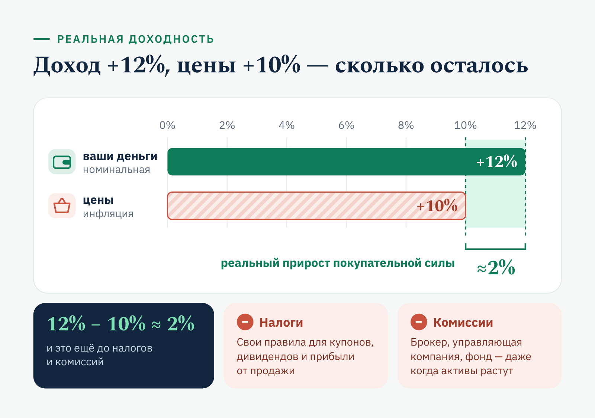
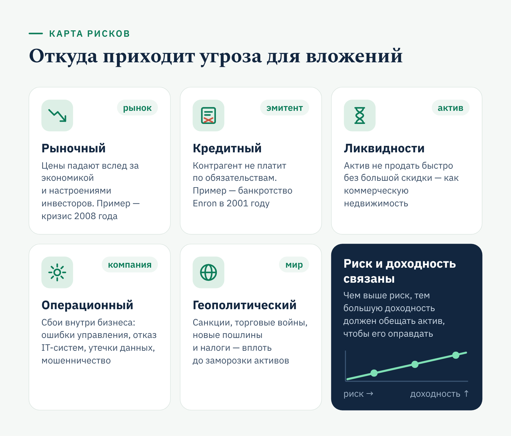
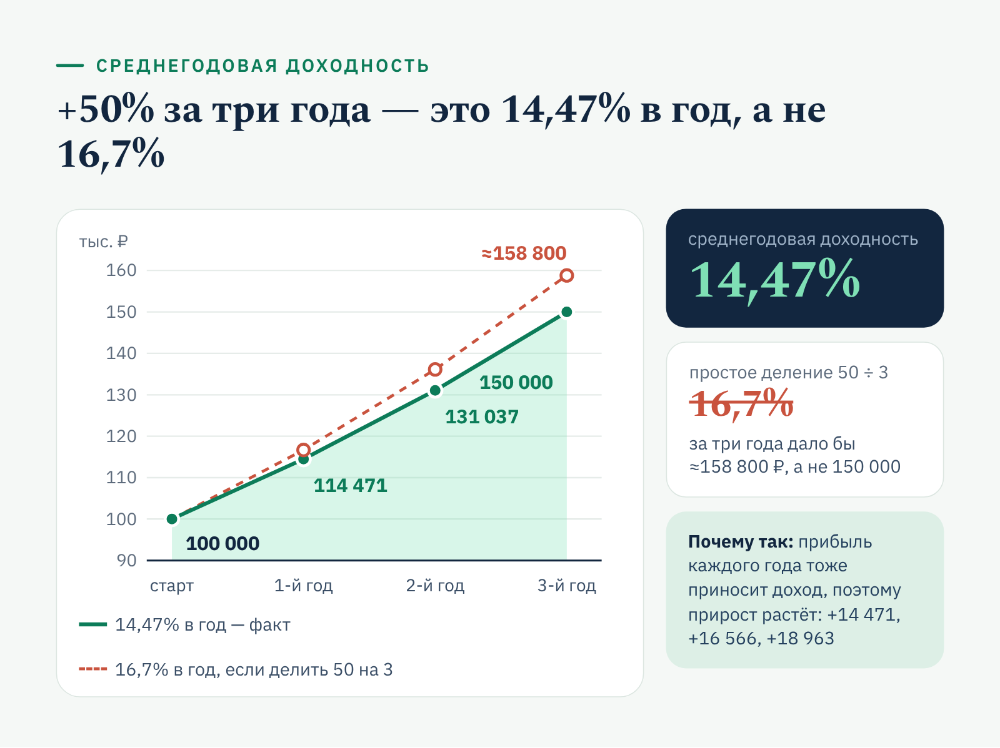
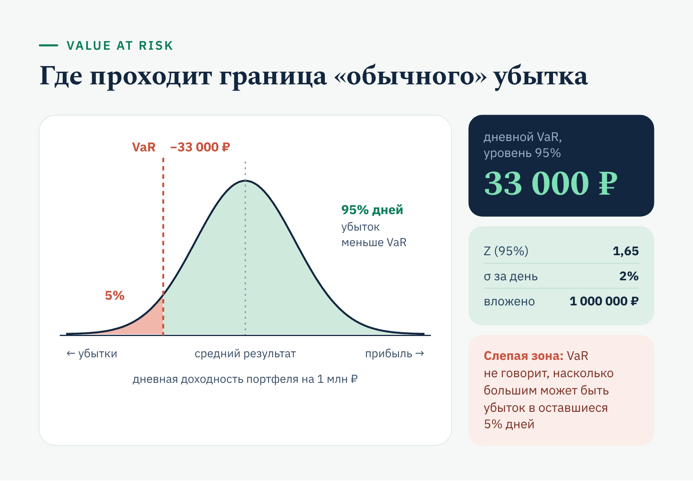
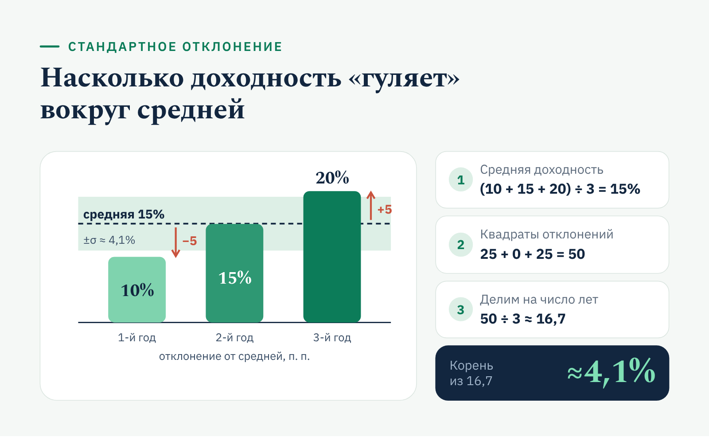
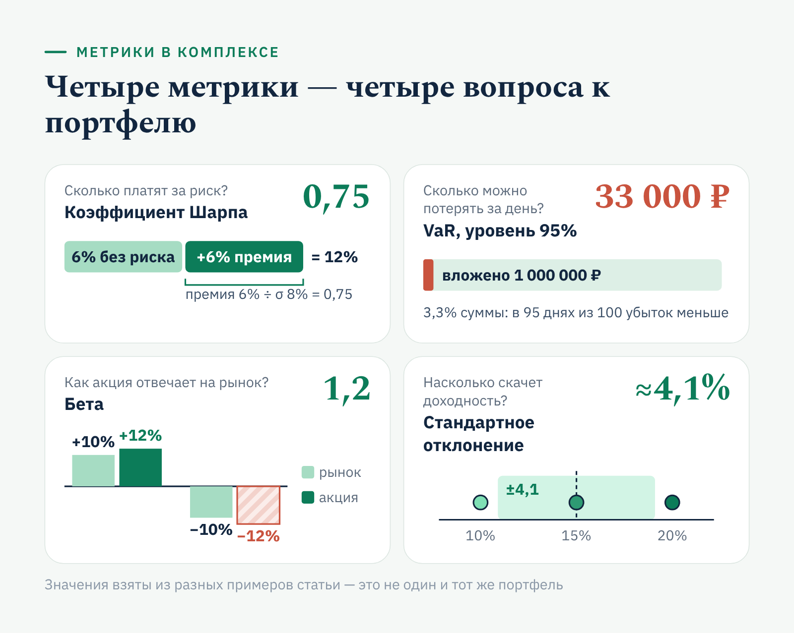

«Финуслуги» · YMYL · финансы
Статья «Финуслуг» о метриках риска и доходности инвестиций
«Финуслуги»finuslugi.ru
«Финуслуги» — маркетплейс финансовых продуктов, который Московская биржа запустила в 2020 году в рамках проекта Банка России. На витрине больше 40 банков с депозитами и больше 20 с кредитами; за 11 месяцев 2025 года через площадку открыли более 1 млн вкладов.
- Площадка
- Блог finuslugi.ru
- Формат
- Информационная статья
- Год
- 2024
Финансовому маркетплейсу требовался экспертный контент для блога: тексты, которые объясняют сложные продукты понятным языком и привлекают пользователей из поиска. За время сотрудничества я подготовила более 40 статей о вкладах, инвестициях и программе долгосрочных сбережений.
Задача
Объяснить частному инвестору, как оценивать риск и доходность вложений.
Решение
Разобрала каждую метрику на простом примере, свела сравнение в таблицу, пояснила схемами.
Результат
Статья прошла финансовую редактуру площадки без замечаний к расчётам.
Как оценивать риски и доходность инвестиций: основные метрики
Инвестиции — это всегда выбор между возможностью заработать и риском потерять часть вложений. Как понять, принесёт ли актив прибыль? Какие инструменты помогут держать риск под контролем? Разберём основные понятия и метрики: по ним инвестор судит, окупаются ли вложения, и вовремя замечает, где капитал под угрозой.
Что такое доходность инвестиций
Доходность показывает, сколько вы заработали или можете заработать на вложениях. Без неё невозможно понять, оправдывает ли актив свои риски и стоит ли продолжать в него инвестировать.
На практике чаще всего используют три показателя:
- Абсолютная доходность — разница между тем, что вы вложили, и тем, что получили в итоге. Купили акцию за 100 рублей, продали за 120 — заработали 20 рублей, или 20%.
- Среднегодовая доходность — сколько в среднем актив приносил за год. Она нужна, если вложение длится несколько лет.
- Доходность к погашению (YTM) — метрика для облигаций. Показывает ожидаемую доходность, если держать бумагу до конца срока, с учётом купонов и разницы между ценой покупки и номиналом.
Формулы и примеры расчёта для каждой метрики — ниже, в разделе об инструментах анализа.
Что влияет на итоговый результат
Номинальная доходность — ещё не те деньги, которые останутся у инвестора. Её снижают три фактора.
Инфляция уменьшает реальную стоимость прибыли. Если актив приносит 12% годовых, а инфляция составляет 10%, реальная доходность — всего около 2%. Для долгосрочных вложений этот фактор может оказаться решающим.
Налоги уменьшают чистый доход. Для разных активов и видов дохода действуют свои правила налогообложения. Уточняйте налоговые обязательства заранее, особенно если получаете дивиденды или купоны.

Комиссии сокращают общий результат. Плата брокеру за сделки, вознаграждение управляющей компании или фонду напрямую уменьшают прибыль. Регулярные комиссии могут «съедать» заметную часть заработка, даже если активы растут.
Если учесть все три фактора, оценка доходности получится реалистичной, а финансовые планы — точнее.
Что такое инвестиционные риски
Риск — неизбежный спутник инвестиций. Это вероятность того, что доходность окажется ниже ожидаемой, вплоть до прямых убытков. Чем выше риск, тем большую доходность должен обещать актив, чтобы его компенсировать. Чтобы принимать взвешенные решения, важно различать виды рисков.
Основные виды рисков
Рыночный риск связан с изменением цен на рынке. Стоимость акций, облигаций и других активов зависит от экономической ситуации, настроений инвесторов и политических событий. В кризис 2008 года акции многих компаний резко подешевели, даже если их собственные показатели оставались стабильными.
Кредитный риск возникает, когда контрагент — например, эмитент облигаций — не выполняет обязательства. Если компания-эмитент обанкротится, инвесторы могут потерять вложения. Хрестоматийный пример — крах американской Enron в 2001 году, обернувшийся огромными убытками для её акционеров и кредиторов.
Риск ликвидности — вероятность, что актив не удастся быстро продать по справедливой цене. Коммерческую недвижимость, например, бывает сложно быстро продать без существенной скидки.

Операционный риск связан со сбоями внутри компании: ошибками управления, отказами IT-систем, мошенничеством. Утечка данных в крупной компании оборачивается убытками и падением стоимости её акций.
Геополитический риск возникает из-за изменений в политической и экономической обстановке. Санкции, торговые войны, новые пошлины и налоговые правила могут резко повлиять на стоимость активов, привести к заморозке вложений или потере доступа к зарубежным рынкам.
Метрики доходности и риска: инструменты анализа
Метрики помогают понять, насколько оправдано вложение, как оно повлияет на баланс портфеля и какую прибыль может принести. Разберём основные инструменты и каждый посчитаем на примере.
Абсолютная доходность
Показывает, на сколько процентов изменилась стоимость вложения за период.
Формула: абсолютная доходность = (конечная стоимость − начальная стоимость) ÷ начальная стоимость × 100%.
Пример. Инвестор вложил в акции 100 000 рублей, через год они стоят 120 000 рублей: (120 000 − 100 000) ÷ 100 000 × 100% = 20%.
Метрика простая, но не учитывает время. Для долгосрочных вложений важнее понимать, сколько актив приносит в среднем за год.
Среднегодовая доходность
Показывает, какой процент актив приносил ежегодно на протяжении всего срока с учётом того, что прибыль каждого года реинвестируется.
Формула: среднегодовая доходность = (конечная стоимость ÷ начальная стоимость)^(1/n) − 1, где n — количество лет.
Пример. Вложение выросло со 100 000 до 150 000 рублей за три года: (150 000 ÷ 100 000)^(1/3) − 1 ≈ 0,1447, то есть 14,47% годовых.

Обратите внимание: общий прирост за три года — 50%, но в пересчёте на год это не 16,7%, а 14,47%. По этой метрике можно честно сравнивать активы с разными сроками инвестирования.
Коэффициент Шарпа
Измеряет, сколько доходности инвестор получает на каждую единицу принятого риска.
Формула: коэффициент Шарпа = (доходность портфеля − безрисковая ставка) ÷ стандартное отклонение доходности.
Пример. Портфель принёс за год 12%, безрисковая ставка — 6%, стандартное отклонение доходности — 8%: (12 − 6) ÷ 8 = 0,75.
Чем выше коэффициент, тем лучше соотношение риска и доходности: из двух портфелей с одинаковой доходностью выгоднее тот, у которого Шарп больше.
Value at Risk (VaR)
Показывает, какую сумму инвестор может потерять с заданной вероятностью за определённый период.
Формула: VaR = Z × σ × √t × сумма вложений, где:
- Z — значение стандартного нормального распределения для выбранного доверительного уровня;
- σ — стандартное отклонение доходности за единицу времени;
- t — период в тех же единицах (днях, неделях, месяцах).
Пример. Дневная волатильность актива — 2%, сумма вложений — 1 млн рублей, доверительный уровень — 95% (Z ≈ 1,65). Дневной VaR = 1,65 × 0,02 × 1 000 000 = 33 000 рублей.

Иначе говоря, в 95 днях из 100 убыток не превысит 33 000 рублей. Но VaR ничего не говорит о том, насколько большими могут быть потери в оставшиеся 5% случаев, — поэтому его используют вместе с другими метриками.
Коэффициент бета
Измеряет, как актив реагирует на движения рынка.
- Бета = 1 — актив движется вместе с рынком.
- Бета > 1 — актив волатильнее рынка.
- Бета < 1 — актив менее чувствителен к рыночным колебаниям.
Пример. Бета акции равна 1,2. Значит, при росте рынка на 10% её цена в среднем вырастет примерно на 12%, а при падении рынка на 10% — снизится примерно на 12%.
Стандартное отклонение
Оценивает, насколько сильно доходность актива отклоняется от среднего значения, — то есть измеряет волатильность.
Формула: σ = √( Σ(Rᵢ − R̄)² ÷ N ), где Rᵢ — доходность за период, R̄ — средняя доходность, N — количество периодов.
Пример. Доходность актива за три года — 10%, 15% и 20%. Средняя доходность: (10 + 15 + 20) ÷ 3 = 15%. Стандартное отклонение: √(((10 − 15)² + (15 − 15)² + (20 − 15)²) ÷ 3) = √(50 ÷ 3) ≈ 4,1%.

Чем выше стандартное отклонение, тем сильнее колеблется доходность и тем менее предсказуем результат. Этот же показатель стоит в знаменателе коэффициента Шарпа и входит в формулу VaR — поэтому волатильность влияет сразу на несколько метрик риска.
Баланс между доходностью и безопасностью
Метрики помогают найти баланс между прибылью и риском. Актив с высокой доходностью может не подойти консервативному инвестору, если у него слишком большие стандартное отклонение и VaR. Коэффициент Шарпа подскажет, у каких инструментов соотношение риска и доходности лучше, а бета — как портфель поведёт себя при резком движении рынка.

Главное правило: анализируйте метрики в комплексе. Ни одна из них по отдельности не даёт полной картины — вместе они показывают, подходит ли портфель вашим целям и допустимому уровню риска.
Практические рекомендации для инвесторов
Чтобы инвестиции приносили результат, нужны чёткие цели, система и регулярный контроль. Восемь советов, которые помогут снизить риски и улучшить результат:
- Определите цель вложений. Пассивный доход, крупная покупка или капитал к пенсии — цель задаёт срок инвестирования и допустимый уровень риска.
- Оцените свой риск-профиль. Если просадки вызывают сильное беспокойство, выбирайте менее рискованные инструменты — облигации надёжных эмитентов, дивидендные акции. Тем, кто готов к волатильности ради большей прибыли, подойдут акции быстрорастущих компаний и венчурные инвестиции.
- Соберите диверсифицированный портфель. Распределите капитал между акциями, облигациями, недвижимостью и металлами: если один актив подешевеет, другие смягчат потери.
- Пользуйтесь аналитическими инструментами. Коэффициент Шарпа показывает баланс риска и доходности, VaR — возможные потери, бета — чувствительность к рынку.
- Регулярно пересматривайте портфель. Экономическая ситуация меняется, поэтому проверяйте стратегию хотя бы раз в год.
- Создайте резервный фонд. Держите сумму, равную расходам за 3–6 месяцев, в низкорисковых инструментах или на счёте, чтобы в кризис не продавать активы по невыгодной цене.
- Управляйте рисками. Используйте стоп-лоссы, хеджирование и перераспределение активов.
- Учитесь и консультируйтесь. Читайте финансовую литературу, следите за новостями рынков, а если знаний не хватает — обратитесь к финансовому консультанту.
Доходность и риск всегда идут в паре, и задача инвестора — найти между ними разумный баланс. Инвестиции — марафон, а не спринт. Не гонитесь за быстрой прибылью и держитесь стратегии: продуманный план приведёт к финансовым целям без лишних потрясений.